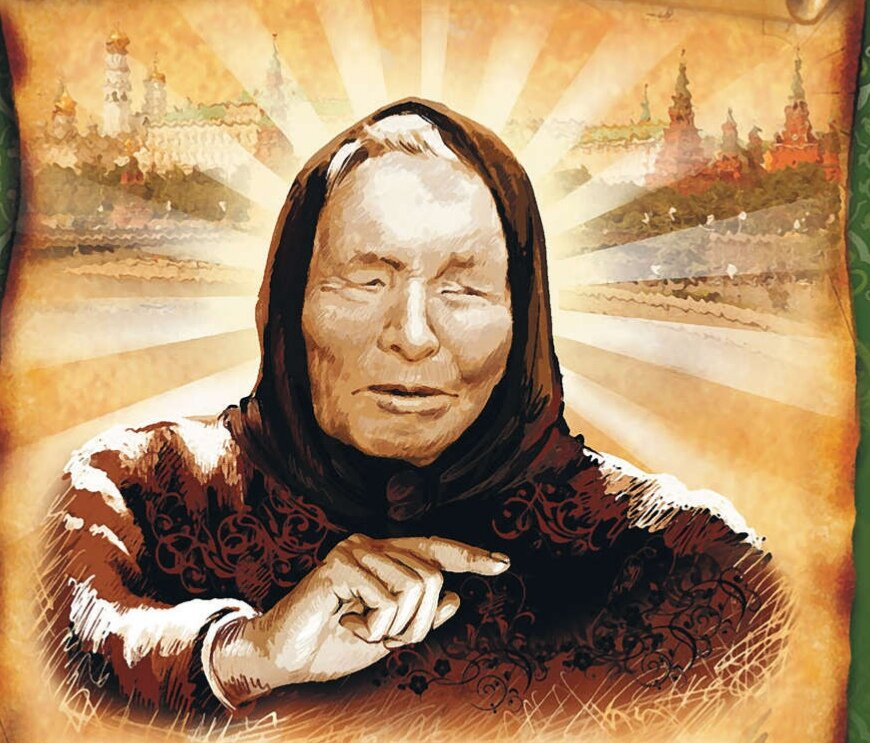
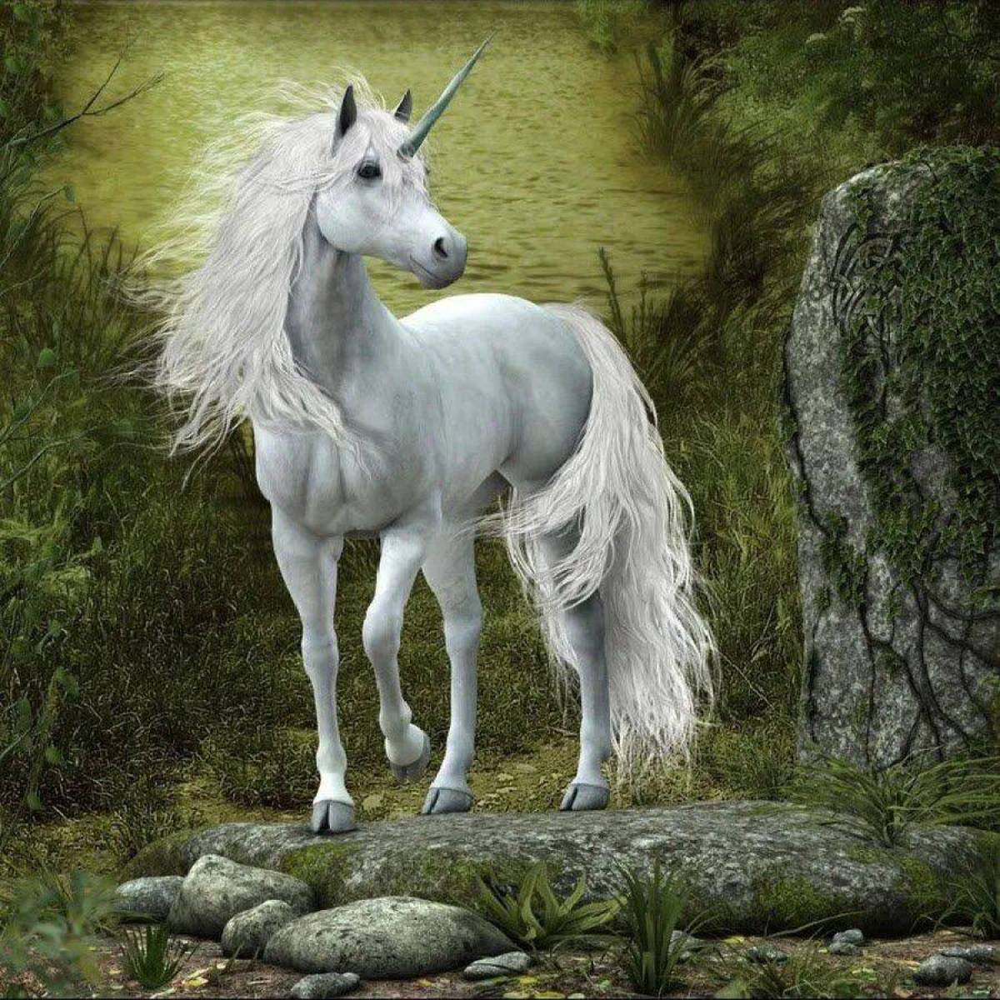

Magic items
Magic lamp

I suddenly realized that Aladdins lamp is a real lamp, a lighting device (and I always perceived it as just an artifact, without thinking about why “lamp”). Officially, this device is called a wen (or oil lamp).The image of the Genie, imprisoned in a lamp and granting 3 wishes, first appeared in the collection of fairy tales "A Thousand and One Nights". (by the way, to put it mildly, he is not at all the good-natured guy from the Disney cartoon).According to traditional Arabic mythology, jinn are powerful spirits created from pure flame. Apparently, the still unknown author of the Arabian Nights fairy tales considered it very poetic to enclose the spirit of the flame in an oil lamp as a constant source of fire.
Carpet plane

In fairy tales, a flying carpet is a magical form of transport that allows you to travel through the air.Researchers believe that this fantastic means of transportation came to European and Slavic folklore from the East. For example, his descriptions can be found in the collection of fairy tales and short stories “A Thousand and One Nights”. The flying carpet is mentioned in “The Tale of Ivan the Guest’s Son”, “The Wonderful Hen”, “Horns”, “Prophetic Dream”, “The Enchanted Princess”, “The Frog Princess”, “Elena the Wise” and other Russian fairy tales, folk and copyright. Based on many of these scenes, in 1880 the artist Viktor Vasnetsov painted the painting “Flying Carpet.”
The magic wand
Wizards, witches, wizards and fairies know that to enhance their magical powers they need a magic wand. These delicate hand-held devices were said to be a source of magic, or at least a distraction from sleight of hand. Many people believe that the magic wand became especially widespread with the release of J. K. Rowling’s books about the boy wizard, but in fact, this unusual item has a long and complicated history. By all accounts, the first written references to magic wands come from the Greek writer Homer and appear in his works The Iliad and The Odyssey. In the Iliad, he wrote that the magic wand, which he also called the wand, was the instrument with which the god Hermes put people to sleep and then woke them up again. Thus, in his dreams he conveyed the messages of the gods to people. In The Odyssey, the goddess Athena used her magic wand to turn Odysseus into an old man and then made him young again. Another heroine of the same work, the goddess Circe, uses her to turn Odysseus’s people into pigs.
Mgicians and witches
Grigory Rasputin
Who was he - a saint, a demon or just a depraved charlatan? Today, Grigory Efimovich Rasputin would probably be called a psychic and was greeted in the same way everywhere, but then, at the beginning of the 20th century, a Siberian man with a reputation as a great healer reached the very top, becoming the personal physician of Queen Alexandra and her son with hemophilia.. .
Wolf Messing
Wolf Grigorievich Messing is one of the most mysterious figures of the 20th century. Either he is called a fraudster, or he is called the strongest clairvoyant, hypnotist and sorcerer in the history of mankind, or he is accused of having connections with the Nazis, or he is praised for his loyalty to the Soviet people in the fight against enemies. In short, so many different opinions have been expressed about him and so many myths have been inflated that it is already very difficult to distinguish truth from fiction. In addition, there is an opinion that Wolf Messing himself liked to lie about himself, and attributed various kinds of achievements to himself.
Vanga

Baba Vanga is a world-famous Bulgarian clairvoyant who has the unique gift of foreseeing the most important events in the world. The biography of the clairvoyant is considered the most mysterious among all famous people of the last century, since it contains no confirmed events. However, Vanga’s predictions are still an unsolved phenomenon, as the popular press claims. Fans of Vanga's gift are finding new evidence that prophecies continue to come true with incredible accuracy in the modern world, while skeptics claim the opposite.
Fantastic Beasts
Dragons
Dragons are powerful mythical creatures, usually depicted as giant flying snakes/lizards or other quadrupeds that have magical, spiritual or supernatural qualities. Most dragons are distinguished between the winged Western dragons (derived from various European folk traditions) or the Eastern dragons (derived from the Chinese "lung" dragon).
Dragons are found in many legends around the world. Like most other mythological creatures, dragons are perceived differently by different cultures. However, dragons have often been believed to have important spiritual significance in various religions and cultures.
Unicorn

A unicorn is a horse in mythology with a single horn in its forehead, a symbol of spiritual purity. One of the most popular fictional animals. In its formation, first in Greco-Roman culture, and then in European medieval culture, imagination played a significant role. In different cultures, the unicorn can have different meanings: -in the Sumerian-Semitic tradition, the unicorn is a lunar symbol, an attribute of virgin goddesses; -in Ancient China, the unicorn (qilin) is interpreted as a combination of two concepts: “qi” - the male aspect (yang), the energy of creation; “lin” is the female principle (yin); -in Tibet, the unicorn (depicted as a gazelle or doe) is a bridge between Heaven and Earth.
Kentavr
Centaur - in ancient Greek mythology, are wild mortal creatures with the head and torso of a man on the body of a horse. Centaurs live in the mountains and forest thickets, accompany Dionysus and are distinguished by their violent temperament and intemperance. Presumably, centaurs were originally the embodiment of mountain rivers and stormy streams. In heroic myths, some centaurs are the educators of heroes, while others are hostile to them. Centaurs are also fantasy characters.